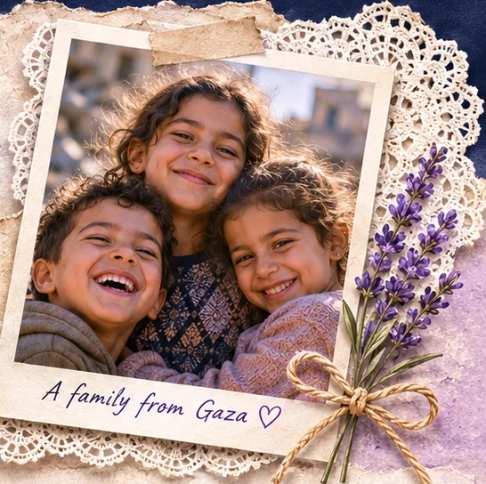

Our Purpose
To listen, uplift, and help families in Gaza with dignity and care.
Behind every headline is a family who loves, dreams, remembers, and hopes. People for Gaza is a gentle space to share their stories, honor their humanity, and stand with them in compassion.
♡ Read Their Stories →
To listen, uplift, and help families in Gaza with dignity and care.
Real people. Real lives. Read their words, see their strength, and share in their hope.
Help meet urgent needs and stand alongside families as they rebuild.
“Thank you for seeing us, for listening, and for remembering that we are human.”
Stories and donations will be available after appropriate consent and verification processes are established.
A place for compassion, connection & human dignity
Website in development. The family photograph, skyline illustration and quotation in the design are fictional illustrative placeholders, not verified Gaza family testimony or documentary imagery. Family stories and donations are not open yet. We will publish personal stories only with informed permission.